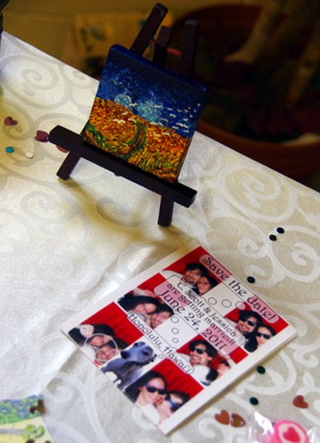

Welcome!
Please use the menu at the top of the page to select a topic.
Please wait...
Welcome!
This website will be kept updated with the latest information on Scott and Jessica's wedding and Boston reception. Keep checking back as the event dates approach!
Hawaii wedding
The wedding ceremony will be at 5pm on Friday, June 24, 2011 in the Maile Garden at the Hale Koa hotel in Honolulu, Hawai'i. A reception will follow in the Banyan Tree Showroom at the Hale Koa. You can read more on the Hawai'i page, or just go ahead and RSVP now.
Boston dance & reception
We will also have a dance and reception in the Boston area on July 30, 2011. Check out the Boston page for all the details! (You can also skip ahead to RSVP.)
Events in Hawaii
The wedding is in Hawai'i on June 24, 2011. Details:
Events in Hawaii
Rehearsal Dinner: Thursday, June 23
We will be having a dinner for our traveling guests in Honolulu at 6:30pm on Thursday. We'll update this page with more details as the date approaches.
Events in Hawaii
Wedding: Friday, June 24
All events will be at the Hale Koa hotel in Waikiki: 2055 Kalia Road Honolulu HI 96825.
- 5pm
- Ceremony in the Maile Garden
- 6-11pm
- Reception at the Banyan Tree Showroom
Sunset will be at 7:17pm.
Validated parking available at the Hale Koa garage, $3 / 8 hours
Events in Hawaii
Brunch: 11am, Saturday, June 25
There will be a brunch for all on Saturday morning.
Events in Hawaii
Visiting volcanos after the wedding
After the wedding, Jessica and Scott are going to visit the big island with friends and family.
- Sunday, June 26
- We're flying to the big island on Hawaii Airlines flight 382, leaving at 10:06am. We'll have lunch and then head off to Akaka Falls (more) and other Hilo-area attractions. In the evening, we'll board a boat to watch lava flow into the sea.
- Monday, June 27
- After breakfast at a local restaurant serving Loco Moco, we'll head off to an orchid farm, pick up some "Stone Cookies" (only made in Hilo), then visit the Volcano National Park. We'll have a luau that evening, then enjoy a well-deserved rest!
- Tuesday, June 28
- We'll rent a 4-wheel drive and drive to the Mauna Kea observatory. In the afternoon, we'll snorkel or do other sea activities.
- Wednesday, June 29
- We'll visit Kona and the Kona coast, and return to Hilo that night.
- Thursday, June 30
- We're flying back to Honolulu in the afternoon.
Contact us if you're interested in going with us on this trip (or just indicate your interest on the RSVP form).
Events in Hawaii
Where to Stay in Hawaii
There are many Hawai'i housing options depending on the style and location you are looking for:
- Waikiki beach
- Hale Koa hotel
2055 Kalia Road Honolulu HI 96825
$118-$222(If you have a military affiliation, you can make your own reservation. If you don't have a military affiliation, we will need to make the reservation for you; email us your travel plans at hawaiiwed2011@gmail.com).
- Outrigger Reef on the Beach (next door to Hale Koa, 0.3 mi away)
2169 Kalia Rd, Honolulu, HI, 96815
$199+ - Halekulani (next door to Outrigger Reef on the Beach, 0.4 mi away)
2199 Kalia Road, Honolulu, HI, 96815 $400+ - Aston Waikiki Circle Hotel (further down Waikiki beach, 1 mi away)
2464 Kalakaua Ave, Honolulu, HI, 96815 $105-$155
- Hale Koa hotel
- Vacation rentals are available at nightly and weekly rates.
Events in Boston
There will be a dancing / dinner reception on Saturday July 30, 2011. The location will be Lobdell Dining Hall on MIT campus. This event will be co-hosted by our friends Richard and Gundela, who are also getting married in the summer of 2011.
The tentative schedule includes:
- Snacks and games
- Dinner and cake
- Dancing (squares and rounds)
There will be dancing that is accessible to everyone even if you don't already dance.
We may also organize some other Boston activities during the weekend with our out-of-town guests; indicate on the RSVP form if you're interested.
Frequently Asked Questions
How did you meet?
In theory, Jessica and Scott first met each other in 2002 (or maybe 2001 or 2000) at an MIT puzzle-solving event, since they were both members of the same team (ACME). Neither of them remember anything about the other, however, until 2004, when they co-led the puzzle-hunting team together in a pattern that would become familiar: Scott providing enthusiasm and Jessica taking care of logistics. Scott's attempts to date Jessica afterward threatened to falter in the face of Jessica's busy dancing schedule, until she proposed a remedy: that Scott learn to dance. That proved to be a solution which allowed them to spend increasing amounts of time together—resulting finally in a proposal on October 23, 2010, via wooden jigsaw puzzle, on a trip to Portland, Maine.
Why Hawaii? Why Boston?
Jessica grew up in Pearl City, Hawai'i, and her family lives there. Scott grew up in Alabama, New Jersey, Honduras, and Guatemala, but his family is mostly in New Jersey and South Carolina. Jessica and Scott went to MIT and now live in Somerville, Massachusetts, and many of their friends are in that area. It was impossible to find a single location that would be convenient for everyone, sadly. Having the wedding near the bride's family in Hawai'i, and having a reception in Boston for those who couldn't manage the long trip to Hawai'i, seemed the best compromise.
Can I come to both?
Yes! We hope we've invited you to the event that would be the most fun and convenient for you to attend. If we've guessed incorrectly, please let us know — or just fill out the RSVP form for the event you'd prefer to attend.
When should I arrive in Hawaii?
Jessica and Scott are arriving June 19 and leaving July 3. We may be pretty busy before the wedding, but of course you're welcome to sight-see on your own. After the wedding, we'd love to socialize with our friends and family—our honeymoon doesn't start until July 5. (For example, you might want to join us on a trip to Hilo.)
Weather & Clothing in Hawaii
June weather is typically warm, relatively humid, with little chance of sustained rain (refreshing rain showers of a minute or two are possible). The ceremony will be in the evening, so it should not be overly hot. If you want more numbers, you can look at the historical weather summary for Hawai'i in June from the Weather Underground.
Weather & Clothing in Boston
As Mark Twain once said, "One of the brightest gems in the New England weather is the dazzling uncertainty of it." That said, we can give you the average numbers from the Weather Underground for July 30: average high is 82 F and average low is 67 F. And if you don't like that, just wait a minute!
Who's the cute dog on the back of the wedding invitations?
That's Lotte, our greyhound.
Engagement Puzzle
The engagement puzzle is in three parts.
The first given to Jessica consists of the floral borders and the pieces between them. It contains various pictures representing Jessica and Scott's life together up to the present: the Red Sox, square dancing, MIT, the mystery hunt, favorite board games, and so on.
After this was completed, the second set of pieces were given, which are the four corners. These form a rebus: puzzle editor Will Shortz, an ewe, Mary Poppins, and the musical note "mi".
After an answer was received, the final set of pieces forms the red center. These contain cut-outs representing our future together.
Detail:
Wedding Registry
We have created a registry for anyone who wants to buy us a gift. Don't feel obligated; we're both adults who already have too much stuff to fit in our house.
For our out-of-town guests: your presence is enough! Really!
Let us know you're coming (or not)!
We've set up some nice on-line forms to help us keep track of who's coming to what, and gather some information about food, events, travel plans, and other little details. Feel free to fill out both forms, even if just to let us know for certain you're not coming to one or the other sets of events.
- Hawai'i RSVP - Please reply by May 27
- Boston RSVP - Please reply by July 2
Unfortunately, these on-line forms aren't set up to allow you to edit your responses after you submit them. If you need to change a response, please send mail to our wedding planning address (hawaiiwed2011@gmail.com) or call us at 617-776-6362.
Van Gogh
Our wedding invitations and website have a loose theme based on a small painting Scott made, which was in its turn inspired by Van Gogh's Wheatfield with Crows.
_-_Wheat_Field_with_Crows_(1890).jpg){kind=link}

The cobalt blue in the sky is one of Scott's favorite colors, while the red-orange of the poppies in the wheatfield below is close to Jessica's favorite shade. The painting unites these two elements. The textures on the website and in the invitations are drawn from several different paintings Scott made on this theme.
One of the stops on our honeymoon will be the Van Gogh museum in Amsterdam, where we hope to see the original Wheatfield with Crows.